数据来源：src/game/items.ts（123 件）+ tasks.ts（30 条任务规则）。生成于本次回归。玩家实际体验就是「任务 → 哪些图片算对」，此表即该映射。
规则：按名称启发式比对标签。「缺」= 名称暗示应有但标签没有；「多」= 名称明显不符合但标签有。图片可直接目检确认。
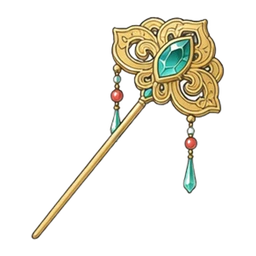
jade_hairpin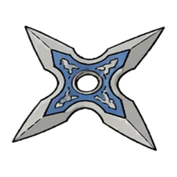
shuriken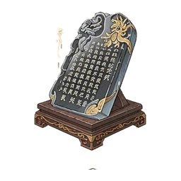
inscribed_music_stand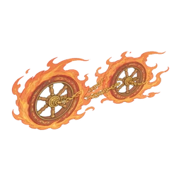
fire_wheels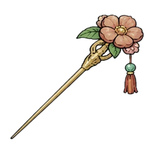
floral_hairpin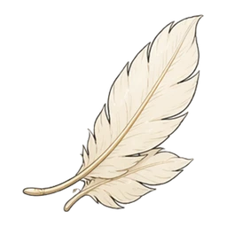
feather「命中池」= 该任务下所有会被判为正确的物品图片。任务目标数 = 关卡要求找到的件数。
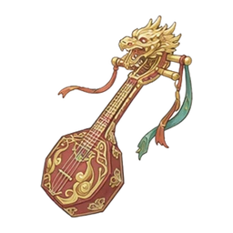
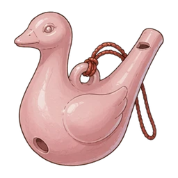
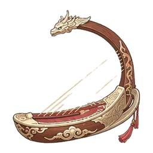
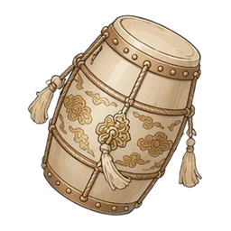
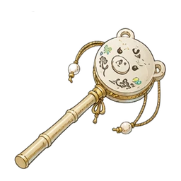
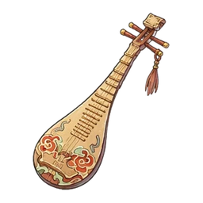
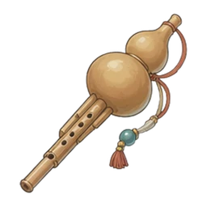
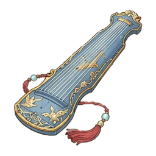
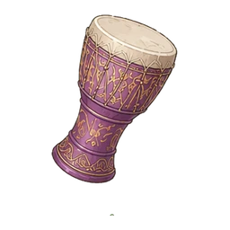
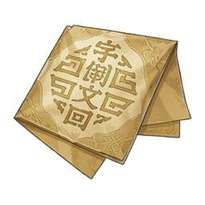
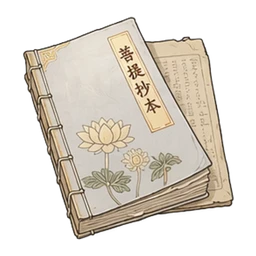
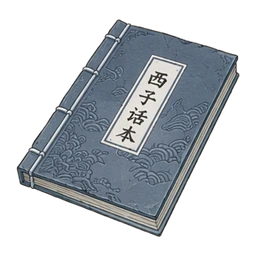
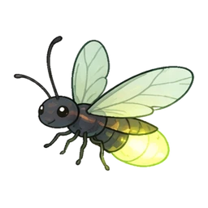
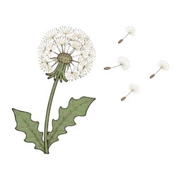
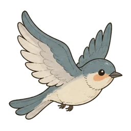
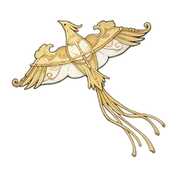
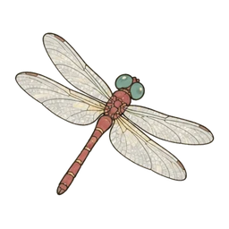
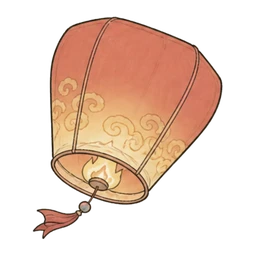
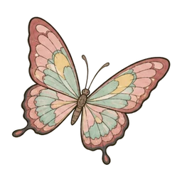
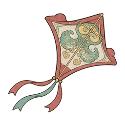
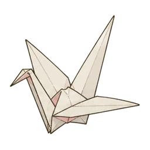
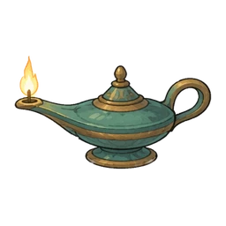
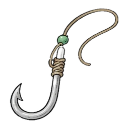
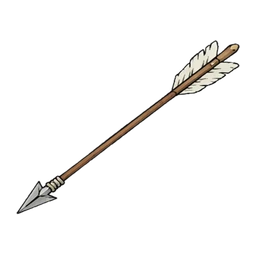
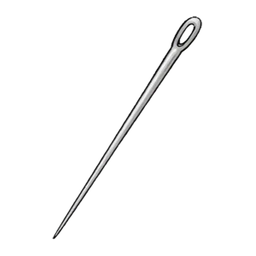
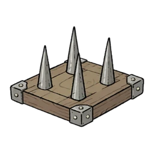
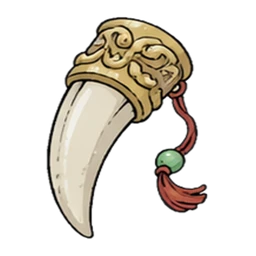
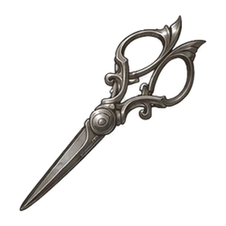
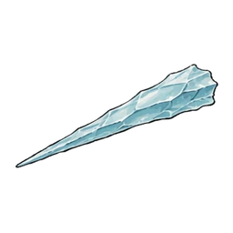
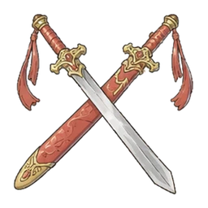
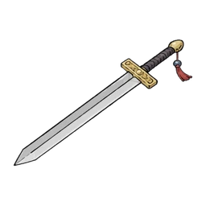
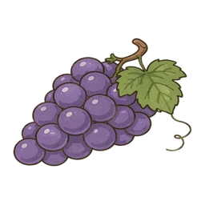
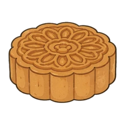
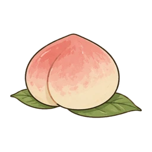
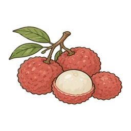
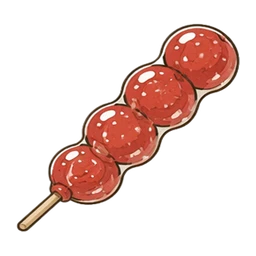
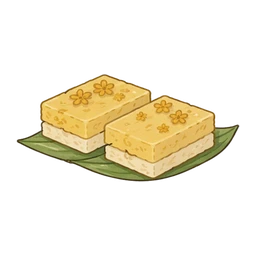
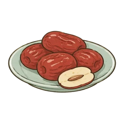
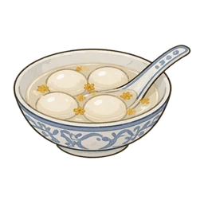
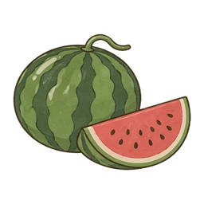
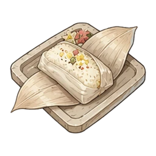
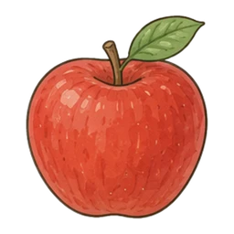
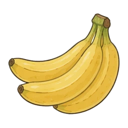
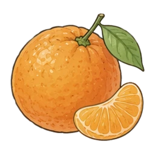
| 图片 | 名称 / id | 全部标签 | 命中任务 |
|---|---|---|---|
骆驼camel |
载具/坐骑动物可骑乘四足 | 找出所有载具与坐骑；找出所有动物；找出动物或坐骑 | |
辣椒chili_pepper |
植物食物蔬菜有叶片 | 找出所有食物；找出属于植物的物品；找出所有蔬菜；找出水果或蔬菜；找出食物，但不要点甜食 | |
金纹琵琶golden_pipa |
乐器可发声细长有流苏有纹样 | 找出所有乐器；找出细长轮廓的物品；找出纹样明显的物品 | |
葡萄grapes |
甜食植物食物水果有叶片 | 找出所有甜食；找出所有食物；找出属于植物的物品；找出所有水果；找出既是植物又是甜食的物品；找出水果或蔬菜 | |
月饼mooncake |
甜食食物圆形 | 找出所有甜食；找出所有食物；找出圆形轮廓的物品 | |
骏马horse |
载具/坐骑动物可骑乘四足 | 找出所有载具与坐骑；找出所有动物；找出动物或坐骑 | |
鸟形陶笛bird_ocarina |
乐器可发声陶瓷有流苏有纹样 | 找出所有乐器；找出陶瓷物品；找出纹样明显的物品 | |
仙桃peach |
甜食植物食物水果圆形有叶片 | 找出所有甜食；找出所有食物；找出属于植物的物品；找出所有水果；找出圆形轮廓的物品；找出既是植物又是甜食的物品；找出水果或蔬菜 | |
花轿sedan_chair |
载具/坐骑可骑乘木制宽大有纹样 | 找出所有载具与坐骑；找出木制物品；找出纹样明显的物品；找出动物或坐骑 | |
箜篌konghou |
乐器可发声木制细长 | 找出所有乐器；找出木制物品；找出细长轮廓的物品 | |
鎏金执壶golden_ewer |
容器瓶/罐金属/珠宝有把手有纹样 | 找出能装东西的容器；找出金属或珠宝物品；找出纹样明显的物品 | |
狸花猫cat |
动物四足 | 找出所有动物；找出动物或坐骑 | |
朱红孔明灯red_sky_lantern |
会飞发光照明物有火焰纸制有流苏 | 找出所有会飞的物品；找出所有会发光的物品；找出会飞又会发光的物品 | |
白瓷瓶white_porcelain_vase |
容器瓶/罐陶瓷细长 | 找出能装东西的容器；找出陶瓷物品；找出细长轮廓的物品 | |
荔枝lychee |
甜食植物食物水果有叶片 | 找出所有甜食；找出所有食物；找出属于植物的物品；找出所有水果；找出既是植物又是甜食的物品；找出水果或蔬菜 | |
彩陶罐painted_jar |
容器瓶/罐陶瓷有纹样 | 找出能装东西的容器；找出陶瓷物品；找出纹样明显的物品 | |
玄纹壶black_pitcher |
容器瓶/罐陶瓷细长有把手有纹样 | 找出能装东西的容器；找出陶瓷物品；找出细长轮廓的物品；找出纹样明显的物品 | |
篝火campfire |
发光照明物有火焰木制宽大 | 找出所有会发光的物品；找出木制物品 | |
铜锣bronze_gong |
乐器可发声金属/珠宝圆形 | 找出所有乐器；找出金属或珠宝物品；找出圆形轮廓的物品 | |
鱼钩fish_hook |
尖锐金属/珠宝细长有把手 | 找出所有尖锐物品；找出金属或珠宝物品；找出细长轮廓的物品；找出尖锐但不是兵器的物品 | |
火把torch |
发光照明物有火焰木制细长有把手 | 找出所有会发光的物品；找出木制物品；找出细长轮廓的物品 | |
羽箭arrow |
尖锐兵器木制细长 | 找出所有尖锐物品；找出所有兵器；找出木制物品；找出细长轮廓的物品 | |
银针needle |
尖锐金属/珠宝细长 | 找出所有尖锐物品；找出金属或珠宝物品；找出细长轮廓的物品；找出尖锐但不是兵器的物品 | |
飞鱼坐骑flying_fish |
载具/坐骑动物可骑乘 | 找出所有载具与坐骑；找出所有动物；找出动物或坐骑 | |
糖葫芦candied_hawthorn |
甜食食物 | 找出所有甜食；找出所有食物 | |
莲花执壶lotus_ewer |
容器瓶/罐金属/珠宝有把手有纹样 | 找出能装东西的容器；找出金属或珠宝物品；找出纹样明显的物品 | |
地刺spike_trap |
尖锐兵器金属/珠宝 | 找出所有尖锐物品；找出所有兵器；找出金属或珠宝物品 | |
桂花糕osmanthus_cake |
甜食食物 | 找出所有甜食；找出所有食物 | |
梅花鹿deer |
动物四足 | 找出所有动物；找出动物或坐骑 | |
兽牙beast_fang |
尖锐细长 | 找出所有尖锐物品；找出细长轮廓的物品；找出尖锐但不是兵器的物品 | |
腰鼓waist_drum |
乐器可发声木制有流苏有纹样 | 找出所有乐器；找出木制物品；找出纹样明显的物品 | |
翠玉簪jade_hairpin |
尖锐穿戴物配饰头饰金属/珠宝宝石细长有流苏有纹样 | 找出所有尖锐物品；找出所有穿戴物；找出金属或珠宝物品；找出细长轮廓的物品；找出纹样明显的物品；找出金属或珠宝制的穿戴物；找出尖锐但不是兵器的物品 | |
玄铁瓶black_bottle |
容器瓶/罐 | 找出能装东西的容器 | |
九尾狐nine_tailed_fox |
载具/坐骑动物可骑乘四足 | 找出所有载具与坐骑；找出所有动物；找出动物或坐骑 | |
奇门匕首ornate_dagger |
尖锐兵器金属/珠宝细长有纹样 | 找出所有尖锐物品；找出所有兵器；找出金属或珠宝物品；找出细长轮廓的物品；找出纹样明显的物品 | |
萤火虫firefly |
会飞发光照明物昆虫有翅膀 | 找出所有会飞的物品；找出所有会发光的物品；找出会飞又会发光的物品 | |
飞镖shuriken |
尖锐兵器金属/珠宝 | 找出所有尖锐物品；找出所有兵器；找出金属或珠宝物品 | |
长明灯oil_lamp |
容器发光照明物有火焰金属/珠宝有把手 | 找出所有会发光的物品；找出能装东西的容器；找出金属或珠宝物品 | |
红枣red_dates |
容器甜食植物食物水果碗/盘圆形有叶片 | 找出所有甜食；找出所有食物；找出能装东西的容器；找出属于植物的物品；找出所有水果；找出圆形轮廓的物品；找出既是植物又是甜食的物品；找出水果或蔬菜 | |
题字琴架inscribed_music_stand |
有字 | 找出所有文字物品 | |
蒲公英dandelion |
会飞植物花卉有叶片 | 找出所有会飞的物品；找出属于植物的物品 | |
醋坛vinegar_jar |
有字容器瓶/罐陶瓷有纹样 | 找出所有文字物品；找出能装东西的容器；找出陶瓷物品；找出纹样明显的物品 | |
招财狸lucky_raccoon |
动物四足 | 找出所有动物；找出动物或坐骑 | |
拨浪鼓rattle_drum |
乐器可发声木制细长有把手有纹样 | 找出所有乐器；找出木制物品；找出细长轮廓的物品；找出纹样明显的物品 | |
木琵琶wooden_pipa |
乐器可发声木制细长有纹样 | 找出所有乐器；找出木制物品；找出细长轮廓的物品；找出纹样明显的物品 | |
春燕swallow |
会飞有翅膀 | 找出所有会飞的物品 | |
彩绘花瓶painted_vase |
容器瓶/罐陶瓷有纹样 | 找出能装东西的容器；找出陶瓷物品；找出纹样明显的物品 | |
金羽凤凰phoenix |
会飞有翅膀 | 找出所有会飞的物品 | |
蜻蜓dragonfly |
会飞昆虫有翅膀细长 | 找出所有会飞的物品；找出细长轮廓的物品 | |
风火轮fire_wheels |
载具/坐骑兵器有火焰可骑乘圆形宽大成对 | 找出所有载具与坐骑；找出所有兵器；找出圆形轮廓的物品；找出动物或坐骑 | |
金菊chrysanthemum |
植物花卉有叶片 | 找出属于植物的物品 | |
汤圆tangyuan |
容器甜食食物碗/盘陶瓷圆形 | 找出所有甜食；找出所有食物；找出能装东西的容器；找出陶瓷物品；找出圆形轮廓的物品 | |
葫芦丝hulusi |
乐器可发声细长有把手有纹样 | 找出所有乐器；找出细长轮廓的物品；找出纹样明显的物品 | |
题字纸页inscribed_papers |
有字纸制 | 找出所有文字物品 | |
冰锥icicle |
尖锐细长 | 找出所有尖锐物品；找出细长轮廓的物品；找出尖锐但不是兵器的物品 | |
鎏金钵golden_bowl |
容器碗/盘金属/珠宝圆形有纹样 | 找出能装东西的容器；找出金属或珠宝物品；找出圆形轮廓的物品；找出纹样明显的物品 | |
古籍ancient_book |
有字纸制有纹样 | 找出所有文字物品；找出纹样明显的物品 | |
西瓜watermelon |
甜食植物食物水果圆形有叶片 | 找出所有甜食；找出所有食物；找出属于植物的物品；找出所有水果；找出圆形轮廓的物品；找出既是植物又是甜食的物品；找出水果或蔬菜 | |
古琴guqin |
乐器可发声木制细长有流苏有纹样 | 找出所有乐器；找出木制物品；找出细长轮廓的物品；找出纹样明显的物品 | |
橙色孔明灯orange_sky_lantern |
会飞发光照明物有火焰纸制有流苏 | 找出所有会飞的物品；找出所有会发光的物品；找出会飞又会发光的物品 | |
企鹅penguin |
动物 | 找出所有动物；找出动物或坐骑 | |
香炉incense_burner |
容器碗/盘有纹样 | 找出能装东西的容器；找出纹样明显的物品 | |
棉花cotton |
植物花卉有叶片 | 找出属于植物的物品 | |
茄子eggplant |
植物食物蔬菜有叶片 | 找出所有食物；找出属于植物的物品；找出所有蔬菜；找出水果或蔬菜；找出食物，但不要点甜食 | |
双剑crossed_swords |
尖锐兵器金属/珠宝宽大成对 | 找出所有尖锐物品；找出所有兵器；找出金属或珠宝物品 | |
手鼓hand_drum |
乐器可发声木制有纹样 | 找出所有乐器；找出木制物品；找出纹样明显的物品 | |
花簪floral_hairpin |
尖锐穿戴物配饰头饰金属/珠宝宝石细长有流苏有纹样 | 找出所有尖锐物品；找出所有穿戴物；找出金属或珠宝物品；找出细长轮廓的物品；找出纹样明显的物品；找出金属或珠宝制的穿戴物；找出尖锐但不是兵器的物品 | |
缠枝瓶patterned_vase |
容器瓶/罐陶瓷有纹样 | 找出能装东西的容器；找出陶瓷物品；找出纹样明显的物品 | |
首饰匣jewelry_box |
容器有纹样 | 找出能装东西的容器；找出纹样明显的物品 | |
药瓶medicine_bottle |
有字容器瓶/罐陶瓷 | 找出所有文字物品；找出能装东西的容器；找出陶瓷物品 | |
马车carriage |
载具/坐骑可骑乘木制宽大 | 找出所有载具与坐骑；找出木制物品；找出动物或坐骑 | |
蝴蝶butterfly |
会飞昆虫有翅膀 | 找出所有会飞的物品 | |
宝剑sword |
尖锐兵器金属/珠宝细长 | 找出所有尖锐物品；找出所有兵器；找出金属或珠宝物品；找出细长轮廓的物品 | |
陶罐clay_jar |
容器瓶/罐陶瓷 | 找出能装东西的容器；找出陶瓷物品 | |
蜡烛candle |
发光照明物有火焰细长 | 找出所有会发光的物品；找出细长轮廓的物品 | |
楼船treasure_ship |
载具/坐骑可骑乘可渡水木制宽大 | 找出所有载具与坐骑；找出木制物品；找出动物或坐骑 | |
金盖碗lidded_bowl |
容器碗/盘圆形 | 找出能装东西的容器；找出圆形轮廓的物品 | |
柴犬dog |
动物四足 | 找出所有动物；找出动物或坐骑 | |
玉兔rabbit |
动物四足 | 找出所有动物；找出动物或坐骑 | |
蓝皮古籍blue_book |
有字纸制有纹样 | 找出所有文字物品；找出纹样明显的物品 | |
粽子zongzi |
甜食食物 | 找出所有甜食；找出所有食物 | |
纸鸢kite |
会飞纸制 | 找出所有会飞的物品 | |
九格铜鼎partitioned_cauldron |
容器碗/盘金属/珠宝圆形有纹样 | 找出能装东西的容器；找出金属或珠宝物品；找出圆形轮廓的物品；找出纹样明显的物品 | |
牡丹peony |
植物花卉有叶片 | 找出属于植物的物品 | |
百宝柜cabinet |
容器木制 | 找出能装东西的容器；找出木制物品 | |
羽毛feather |
会飞细长 | 找出所有会飞的物品；找出细长轮廓的物品 | |
纸鹤paper_crane |
会飞有翅膀纸制 | 找出所有会飞的物品 | |
苹果apple |
甜食植物食物水果圆形有叶片 | 找出所有甜食；找出所有食物；找出属于植物的物品；找出所有水果；找出圆形轮廓的物品；找出既是植物又是甜食的物品；找出水果或蔬菜 | |
香蕉banana |
甜食植物食物水果 | 找出所有甜食；找出所有食物；找出属于植物的物品；找出所有水果；找出既是植物又是甜食的物品；找出水果或蔬菜 | |
橙子orange |
甜食植物食物水果圆形有叶片 | 找出所有甜食；找出所有食物；找出属于植物的物品；找出所有水果；找出圆形轮廓的物品；找出既是植物又是甜食的物品；找出水果或蔬菜 | |
草莓strawberry |
甜食植物食物水果有叶片 | 找出所有甜食；找出所有食物；找出属于植物的物品；找出所有水果；找出既是植物又是甜食的物品；找出水果或蔬菜 | |
芒果mango |
甜食植物食物水果有叶片 | 找出所有甜食；找出所有食物；找出属于植物的物品；找出所有水果；找出既是植物又是甜食的物品；找出水果或蔬菜 | |
梨pear |
甜食植物食物水果有叶片 | 找出所有甜食；找出所有食物；找出属于植物的物品；找出所有水果；找出既是植物又是甜食的物品；找出水果或蔬菜 | |
菠萝pineapple |
甜食植物食物水果有叶片 | 找出所有甜食；找出所有食物；找出属于植物的物品；找出所有水果；找出既是植物又是甜食的物品；找出水果或蔬菜 | |
猕猴桃kiwi |
甜食植物食物水果圆形 | 找出所有甜食；找出所有食物；找出属于植物的物品；找出所有水果；找出圆形轮廓的物品；找出既是植物又是甜食的物品；找出水果或蔬菜 | |
柠檬lemon |
植物食物水果圆形有叶片 | 找出所有食物；找出属于植物的物品；找出所有水果；找出圆形轮廓的物品；找出水果或蔬菜；找出食物，但不要点甜食 | |
甜瓜melon |
甜食植物食物水果圆形有叶片 | 找出所有甜食；找出所有食物；找出属于植物的物品；找出所有水果；找出圆形轮廓的物品；找出既是植物又是甜食的物品；找出水果或蔬菜 | |
火龙果dragon_fruit |
甜食植物食物水果有叶片 | 找出所有甜食；找出所有食物；找出属于植物的物品；找出所有水果；找出既是植物又是甜食的物品；找出水果或蔬菜 | |
香菜coriander |
植物食物蔬菜有叶片 | 找出所有食物；找出属于植物的物品；找出所有蔬菜；找出水果或蔬菜；找出食物，但不要点甜食 | |
青葱scallion |
植物食物蔬菜细长有叶片 | 找出所有食物；找出属于植物的物品；找出所有蔬菜；找出细长轮廓的物品；找出水果或蔬菜；找出食物，但不要点甜食 | |
苦瓜bitter_melon |
植物食物蔬菜有叶片 | 找出所有食物；找出属于植物的物品；找出所有蔬菜；找出水果或蔬菜；找出食物，但不要点甜食 | |
西兰花broccoli |
植物食物蔬菜有叶片 | 找出所有食物；找出属于植物的物品；找出所有蔬菜；找出水果或蔬菜；找出食物，但不要点甜食 | |
毛豆edamame |
植物食物蔬菜有叶片 | 找出所有食物；找出属于植物的物品；找出所有蔬菜；找出水果或蔬菜；找出食物，但不要点甜食 | |
芹菜celery |
植物食物蔬菜细长有叶片 | 找出所有食物；找出属于植物的物品；找出所有蔬菜；找出细长轮廓的物品；找出水果或蔬菜；找出食物，但不要点甜食 | |
宝石腰饰jeweled_belt |
穿戴物配饰金属/珠宝宝石宽大有纹样 | 找出所有穿戴物；找出金属或珠宝物品；找出纹样明显的物品；找出金属或珠宝制的穿戴物 | |
银纹铠甲silver_armor |
穿戴物衣物金属/珠宝有纹样 | 找出所有穿戴物；找出金属或珠宝物品；找出纹样明显的物品；找出金属或珠宝制的穿戴物 | |
赤纹上衣red_tunic |
穿戴物衣物布料有纹样 | 找出所有穿戴物；找出纹样明显的物品 | |
流苏披肩tasseled_shawl |
穿戴物衣物布料有流苏有纹样 | 找出所有穿戴物；找出纹样明显的物品 | |
凤纹头冠phoenix_crown |
穿戴物配饰头饰金属/珠宝宝石有流苏有纹样 | 找出所有穿戴物；找出金属或珠宝物品；找出纹样明显的物品；找出金属或珠宝制的穿戴物 | |
绣花裤装embroidered_trousers |
穿戴物衣物布料有流苏有纹样 | 找出所有穿戴物；找出纹样明显的物品 | |
玉坠耳环jade_earrings |
穿戴物配饰金属/珠宝宝石成对有纹样 | 找出所有穿戴物；找出金属或珠宝物品；找出纹样明显的物品；找出金属或珠宝制的穿戴物 | |
狐狸面具fox_mask |
穿戴物配饰头饰有流苏有纹样 | 找出所有穿戴物；找出纹样明显的物品 | |
轻纱面帘gauze_veil |
穿戴物衣物配饰头饰布料有流苏有纹样 | 找出所有穿戴物；找出纹样明显的物品 | |
竹编斗笠bamboo_hat |
穿戴物配饰头饰 | 找出所有穿戴物 | |
素面石拱桥plain_stone_arch_bridge |
桥梁可渡水石制宽大 | 找出不是木制的桥 | |
木拱桥wooden_arch_bridge |
桥梁可渡水木制宽大 | 找出木制物品；找出木制的桥 | |
风雨廊桥covered_bridge |
桥梁可渡水木制宽大 | 找出木制物品；找出木制的桥 | |
浮木码头floating_dock |
桥梁可渡水木制宽大 | 找出木制物品；找出木制的桥 | |
荷塘栈道lotus_boardwalk |
桥梁可渡水木制宽大 | 找出木制物品；找出木制的桥 | |
石拱水桥stone_water_bridge |
桥梁可渡水石制宽大 | 找出不是木制的桥 | |
石板桥stone_slab_bridge |
桥梁可渡水石制宽大 | 找出不是木制的桥 | |
吊索桥rope_bridge |
桥梁可渡水木制宽大 | 找出木制物品；找出木制的桥 | |
朱漆拱桥red_arch_bridge |
桥梁可渡水木制宽大 | 找出木制物品；找出木制的桥 |